| 日付 | 2020年10月25日（日） |
|---|---|
| 山域 | 浅間周辺 |
| メンバー | 家族（妻、長女・9歳、長男・7歳） |
| 山行形態 | 子連れ日帰り |
| アクセス | 車 |
| ルート (Map) | 鹿沢温泉駐車場 (8:33) - (9:31) 角間峠 - (10:08) 角間山 (10:18) - (10:40) 角間峠 - (11:38) 湯ノ丸山北峰 (12:36) - (12:44) 湯ノ丸山南峰 - (13:11) 鐘分岐 - (13:49) 東屋 (14:07) - (14:22) 鹿沢温泉駐車場 |
今週末は全国的な晴れ予報。週末に安定した晴れ予報が出るのは本当に久し振りだ。
せっかくの機会なので、遠出することにする。
どの山に行くかはいろいろ迷い、前泊して山に登ることも考えたのだが、
宿もキャンプ場もほとんど一杯で予約を取ることが難しそうだ。
仕方がないので日帰りで湯ノ丸山に行くことにする。
7年振りの訪問で、晴れれば大展望が楽しめそうだ。
鹿沢温泉駐車場に車を停める。標高1530m。
本来ならもう少し地蔵峠側に駐車場があったのだが、
土砂崩れの影響か、工事用車両が置かれていた。
気温は1℃で非常に寒い。
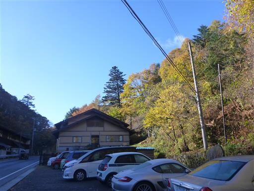
駐車場付近の木はきれいに紅葉している。
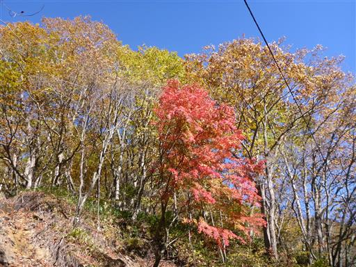
車道を歩くとすぐに登山口に到着する。
車道はところどころ崩壊していて補修中だ。
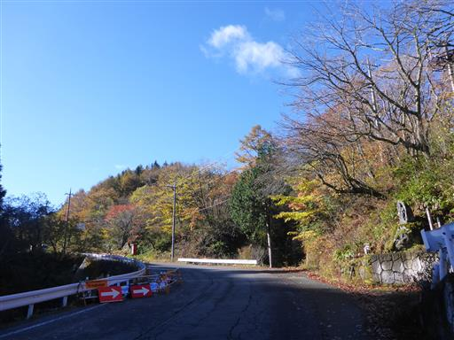
登山口にある千手観音。
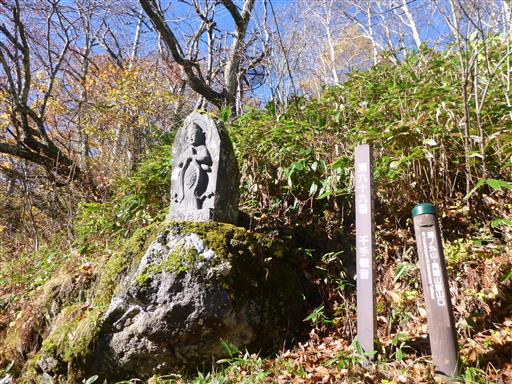
七色に輝くモミジ。グラデーションが非常に美しい。
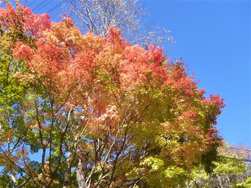
足元に少しだけ雪が積もっている。
昨晩少し天気がぐずついたので、恐らくその時に降ったものだろう。
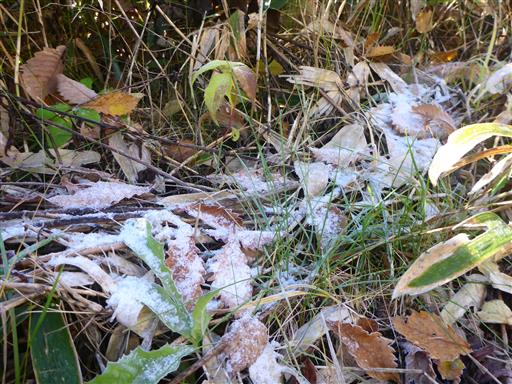
美しい紅葉林の中を登って行く。
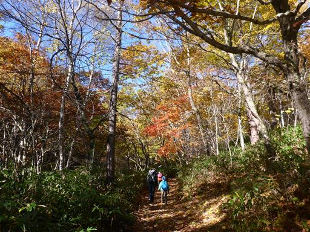
ところどころに立っているシラカバが良く目立つ。
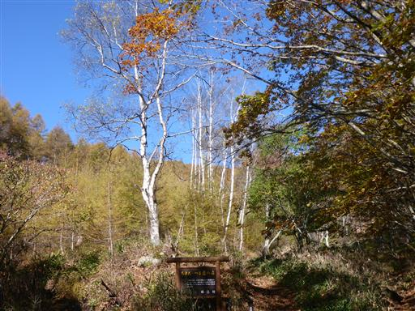
遠く湯ノ丸山の丸い山頂部が見えてくる。
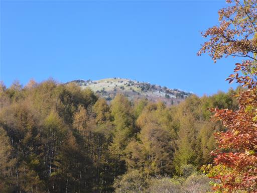
青空とカラマツの黄葉と笹原。
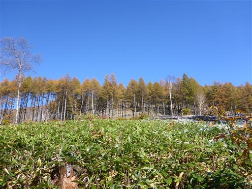
美しい景色の中をゆっくりと歩く。この辺りは他に登山者の姿はなく静かだ。
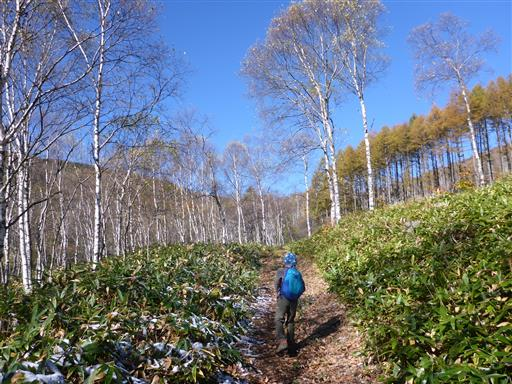
角間峠に到着する。ここには東屋が建っている。
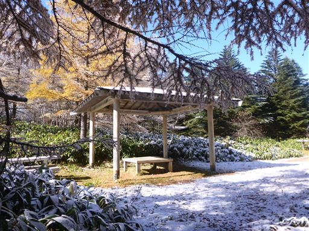
ここも静かで雰囲気の良い場所。
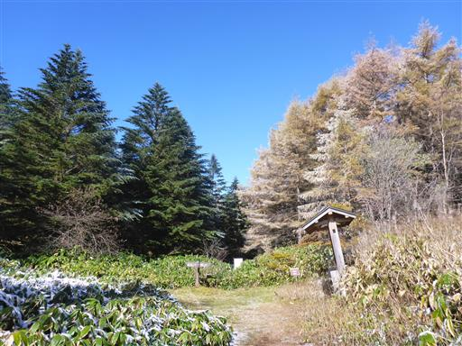
だいぶ標高を上げてきたので、この辺りは雪がまだ豊富に残っている。
これらの雪が解けだすと地面がドロドロになって厄介だ。
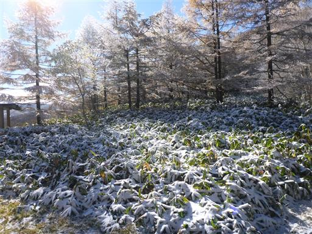
遠く浅間山が見える。珍しく噴煙を上げている。

ここからまずは角間山を往復することにする。
雪の上に赤い落ち葉が積もっていて美しい。
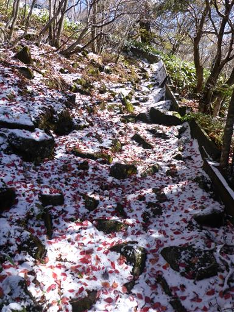
新雪に上の動物の足跡。何の足跡だろう？
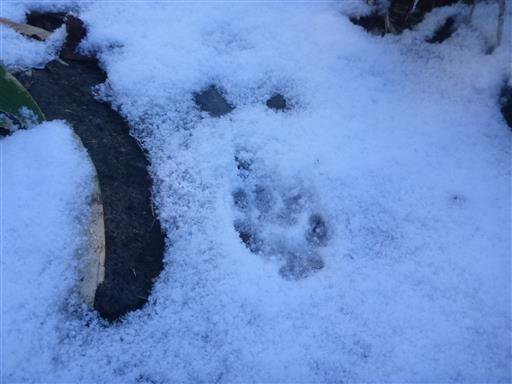
角間山までは案外きつい登りだ。しばらく登ると山頂が見えてくる。
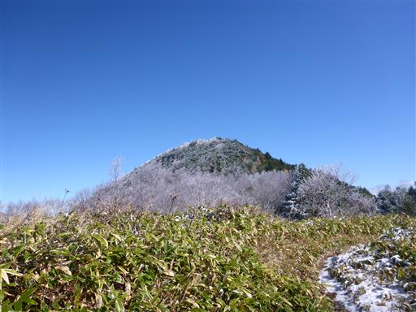
角間山山頂に到着。標高1981m。
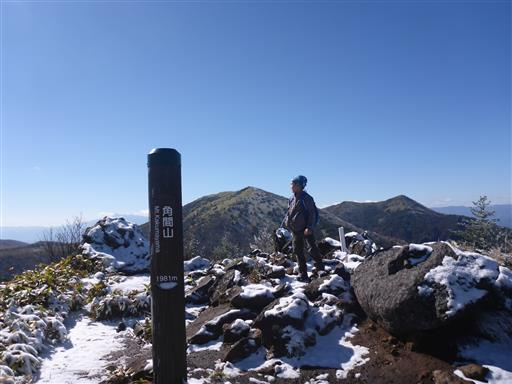
目の前に聳えているのは四阿山。どっしりとした姿だ。
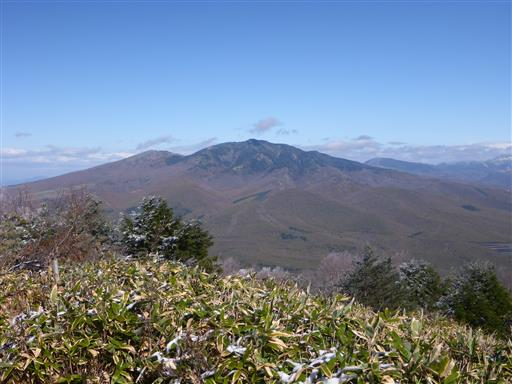
反対方向にはこれから目指す湯ノ丸山と、その奥に烏帽子岳が見えている。
本当は烏帽子岳まで行きたいのだが、時間的に無理だろう。
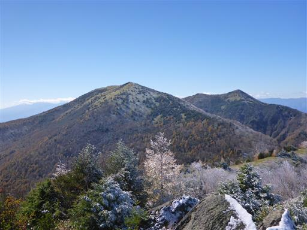
浅間山周辺の山々。この間登った黒斑山や篭ノ登山が連なっている。
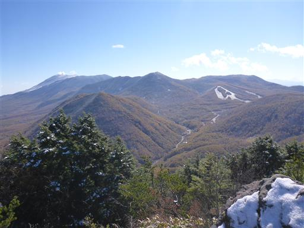
浅間山はもくもくと噴煙を上げている。
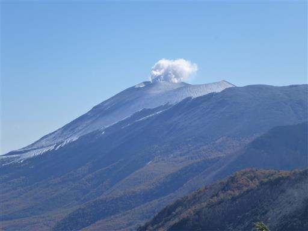
遠くには北アルプス。残念ながら雲がかかっていて全貌は拝めない。
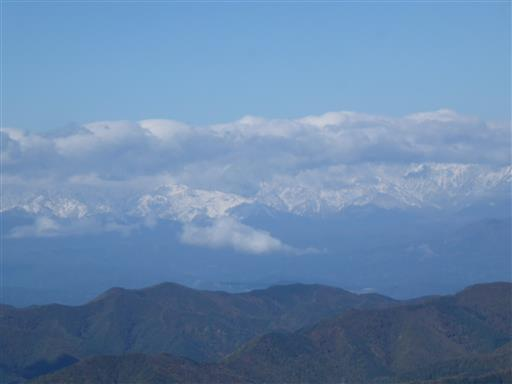
山頂に降り積もった雪は表面がトゲトゲになっている。
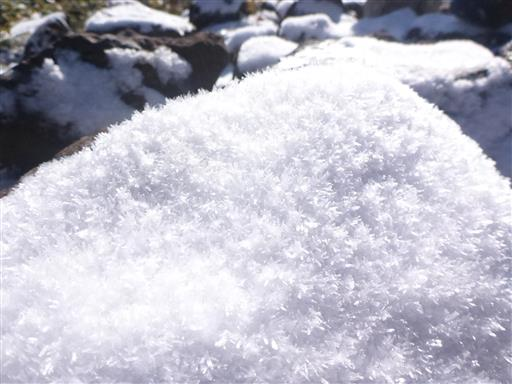
雪の中で一輪だけマツムシソウが寒そうに咲いている。
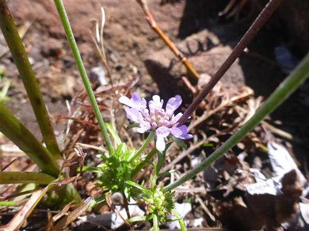
おやつ休憩をとったら下山する。
一箇所急斜面のところがあり、雪で滑るので気を付けて下る。
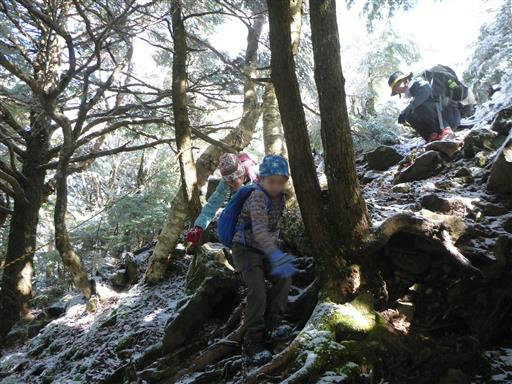
これから目指すは、左手に見える湯ノ丸山だ。
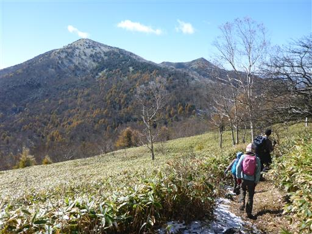
角間峠に戻ったら湯ノ丸山への登りに差し掛かる。
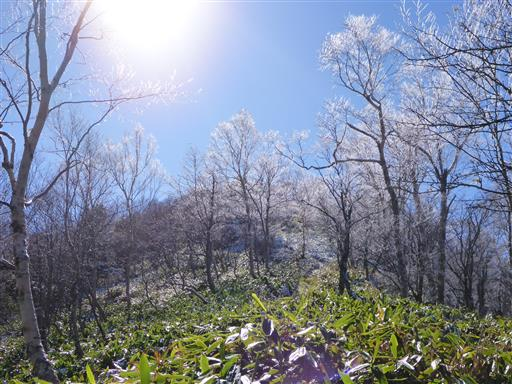
樹林帯に入ると雪が上から落ちてくる。背中に入るとすごく冷たい。
靴が染みてきて息子はものすごく不機嫌だ。

雪の影響でスピードは上がらないが、少しずつ標高を上げていく。
右手に見える角間山よりも高い場所までやってきた。
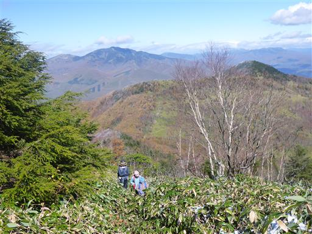
木が少なくなってきて丸い頭が見えてきた。山頂までもう少しだ。
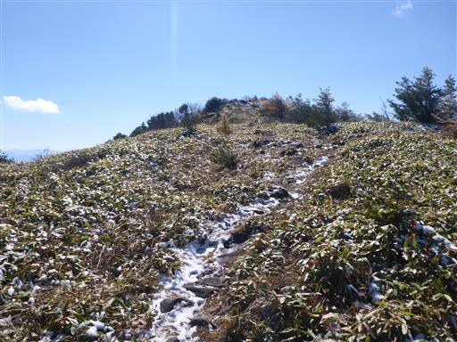
湯ノ丸山北峰に到着する。目の前に見えるのが湯ノ丸山本峰の南峰だ。
ここまでほとんど人と会わなかったのに、急に人が多くなる。
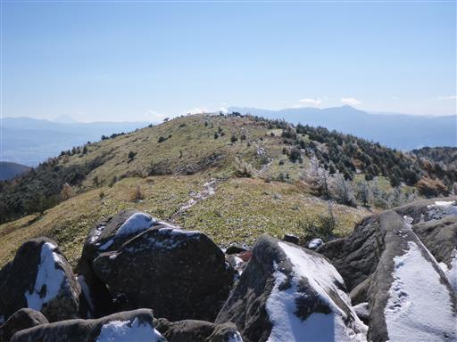
冷たい風が吹いているので、吹きさらしの南峰ではなく、
岩陰に隠れられる北峰で昼食をとることにする。
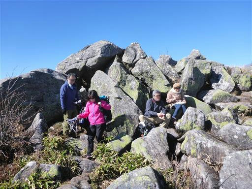
岩だらけのこの山頂からも、もちろん360度の展望が楽しめる。
眼下には小さな火山の村上山、桟敷山、小桟敷山が見える。
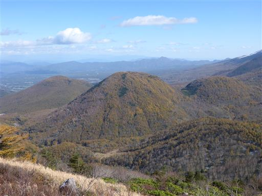
遠くには富士山がはっきりと見えている。
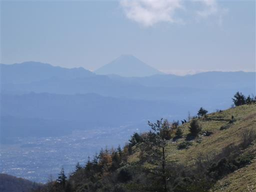
烏帽子岳はもう目と鼻の先だ。
今回は行く時間がないので次の機会に訪れたい。
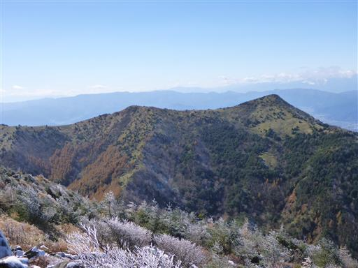
山頂部の木は霧氷で白く染まっている。
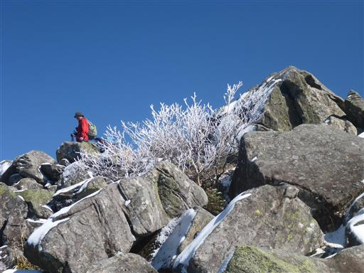
昼食をとったら南峰に向けて出発。
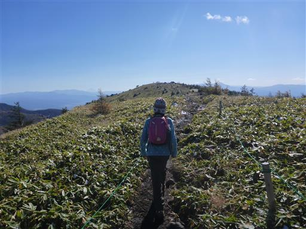
湯ノ丸山山頂に到着。標高2101m。
岩だらけの広い山頂だ。
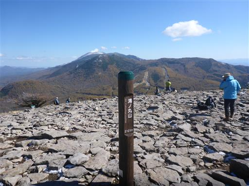
ここまで来ると八ヶ岳を望むことができる。
しかしこちらの方角から見る八ヶ岳はあまり美しくない。
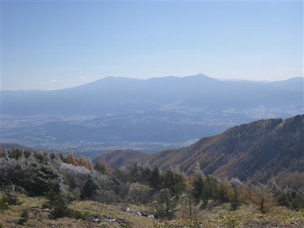
息子は山頂にある岩に登って遊んでいる。
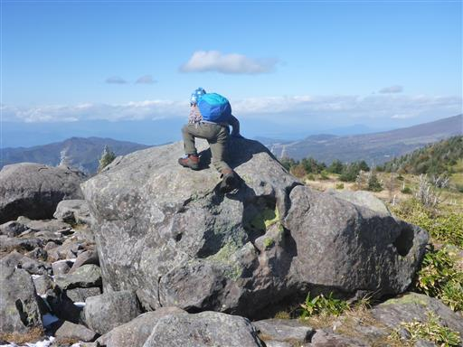
ここでは休憩せずにそのまま下山。
下山道はしばらく、7年前に歩いた道を辿る。
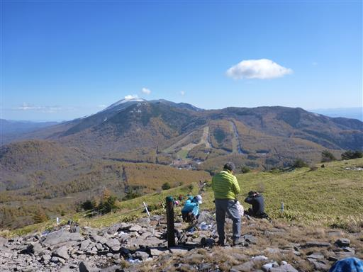
笹原が美しい。案外急斜面の道で、雪が解けてきてドロドロになっている。
この道は湯ノ丸山のメインロードで多くの人で賑わっている。
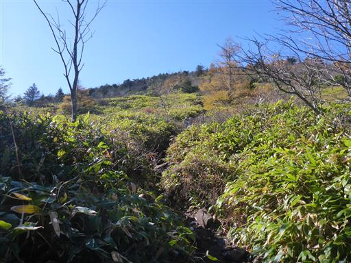
鐘分岐に到着。
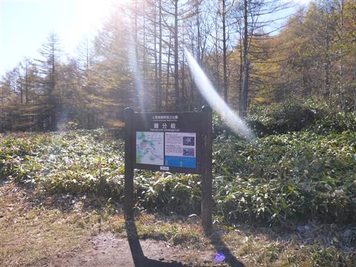
鐘分岐から地蔵峠に下る道と分かれて下山道に入って行く。
メインロードから外れたことで再び静かな道となる。
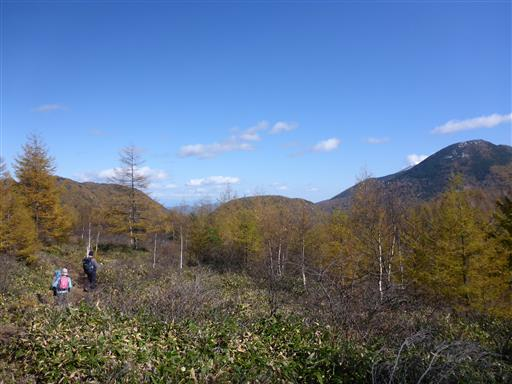
湯ノ丸山を見上げる。左が南峰、右が北峰だ。
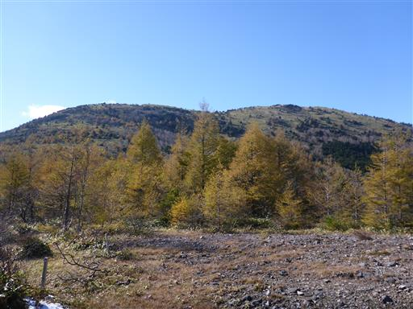
この辺りはあちらこちらに牛の糞が落ちている。
樹林帯が多いが夏の間はこの辺りも自由に牛が行き来しているのだろうか？
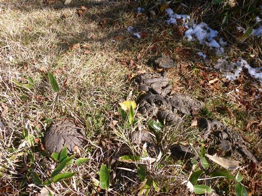
登山道は樹林帯の中の道になる。
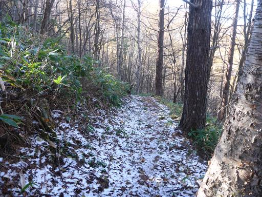
しばらく歩くと開けた場所に到着する。ここは登山道の十字路になっている。
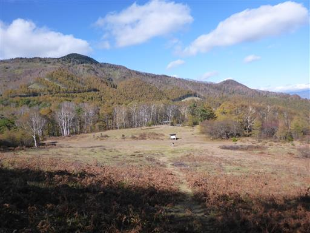
東屋があるので、ここで休憩していくことにする。
人は少なく静かでまるで桃源郷のような場所だ。
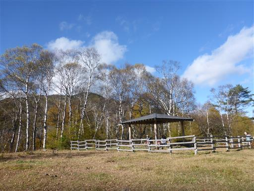
東屋の天井に大きなハチの巣がある。息子が発見。
もうハチはいないようだ。
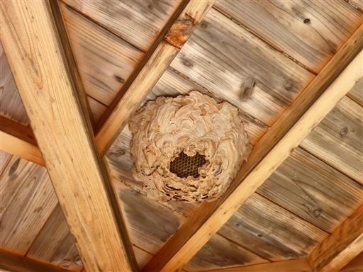
残念ながら赤色はないが、周囲は黄葉が美しい。
ここから駐車場まではあと僅か。駐車場に向かう道の入口が少し分かりにくい。
赤、橙、黄と美しい。
こちらは紅葉ではなく様々な色の実だ。

最後は樹林帯の中の道になる。大きなシダがたくさん生えている。
登山口に到着。ここでは崩壊した道路の修理中だ。
本日は思った通りの見事な快晴で、素晴らしい展望を満喫できた。
想定外の雪道で、それもまた美しかったのだが、子供たちは嫌がっていた。
帰りは大渋滞で往路2:40のところ、復路は5:20もかかってしまった。
GOTOトラベルも良いが、しばらくは遠出はよそうと思った週末だった。